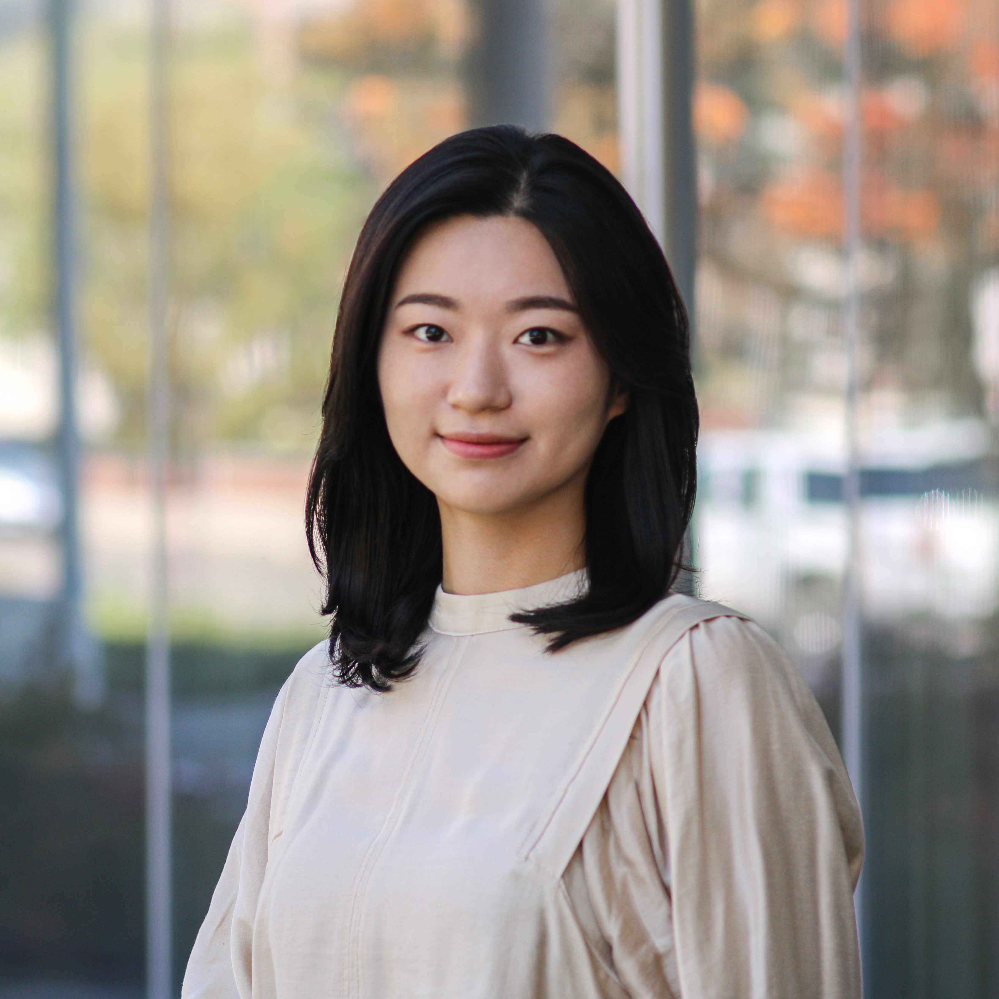

PhD Candidate · Social Work & Sociology · University of Michigan

Hello, my name is Subin Min and I'm a joint PhD candidate in Social Work and Sociology. My research examines asset-based welfare policy, with a particular focus on Children's Development Accounts (CDAs) and their design, implementation, and international diffusion across welfare regimes. Drawing on both U.S. and Korean cases, my work takes a comparative approach to understanding how institutional and policy contexts shape asset-building outcomes for low-income and near-poor families. I am currently involved in several CDA-related research projects, including CollegeBound Boost RCT in Saint Paul, Minnesota, and the Early Awards Scholarship Program in Wabash County, Indiana. My research agenda also extends to youth economic mobility more broadly, including a study of the Growing Detroit's Young Talent summer youth employment program in Detroit, Michigan. My work aims to inform policy interventions that strengthen financial stability and expand economic mobility for marginalized populations.
Elliott, W., Agyare, B. O., Zheng, H., Min, S., & Elliott, M. (2026). Scientific Research Publishing, Inc.
Interested in collaboration, or my work on economic mobility and asset-based policy? I'd be glad to connect.
Email me →